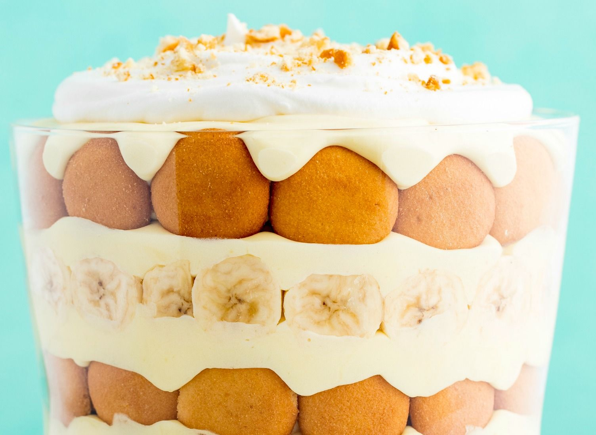

Banana Pudding

Description:
A rich creamy vanilla pudding with a burst of flavor from the sliced up bananas and a hint of crunch from the vanilla wafers. Topped with fluffy coolwhip. This is a tasty delight for any gathering that will keep you wanting more!
Ingredients
- 1 to 1 1/2 bananas per box of pudding
- Jello brand instant vanilla pudding
- Typically half a box of vanilla wafers (add as perferred).
- 1 8oz container of Cool Whip
- Milk (for pudding).
Steps
- Make pudding is instructed on vanilla pudding box.Add to bowl.
- Slice bananas to your liking, add to bowl.
- Add half a box of vanilla wafers to bowl.
- Mix thoroughly.Ensure the wafers are covered with pudding.
- Place in fridge for 30 minutes to an hour depending on how soft you want the wafers.
- Remove from fridge.
- Top with coolwhip and any other toppings as desired.
- Thats it! Enjoy!